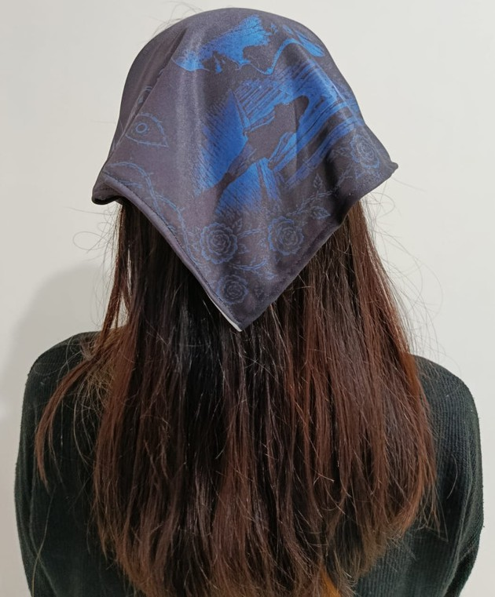
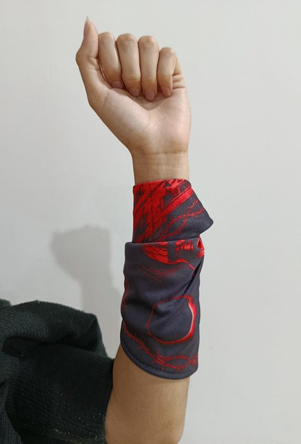

La propuesta del pañuelo
La propuesta toma como inspiración histórica el terror sembrado por Jack el Destripador para trazar un paralelismo con los femicidios actuales. A partir de ese cruce, el diseño expone la persistencia de una violencia que atraviesa épocas y continúa afectando la vida cotidiana de las mujeres.
El pañuelo se organiza como una escena visual intensa, donde la imagen no busca suavizar el conflicto, sino volver visible el peligro latente y el temor real que muchas mujeres experimentan al caminar solas cuando cae el sol.
La noche como escenario
La noche aparece como un territorio cargado de tensión. Calles, sombras, miradas y figuras solitarias componen un clima de amenaza que remite al espacio público como lugar de vulnerabilidad.
Desde esa construcción, la pieza comunica que el miedo no pertenece únicamente al pasado ni a un relato aislado: persiste en la actualidad y se reactualiza en cada situación donde la libertad de circular se ve condicionada por la violencia de género.
Contraste cromático
El universo visual del diseño se sostiene sobre un contraste cromático potente. El azul evoca una falsa calma y la frialdad de la noche, mientras que el rojo irrumpe como símbolo de amenaza, peligro y violencia explícita.
Ese diálogo entre azul y rojo expone de manera cruda la realidad estadística de Argentina, donde la violencia de género se cobra la vida de una mujer cada 36 horas, demostrando que el peligro sigue acechando en las sombras.
Reflexión de la actividad
La pieza propone una lectura visual más oscura y narrativa, donde el pañuelo funciona como soporte de denuncia y como recordatorio de una problemática que sigue reclamando atención colectiva.
Galería del pañuelo



Propuesta realizada por Oporto Andy en el marco de Taller de Diseño III, orientación Textil, junto con el LAD (Laboratorio de Diseño).